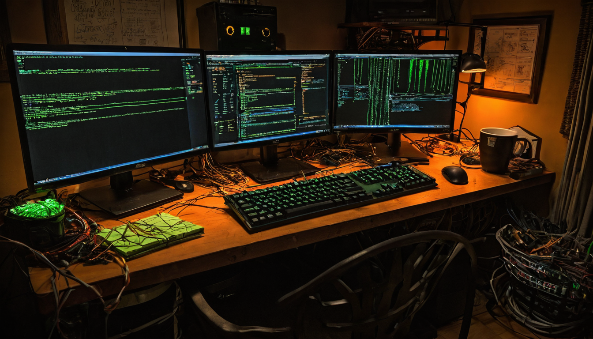

Reliable tool calling in local models has been the hard part. Not the models themselves, not the hardware, but getting a model to invoke tools correctly and consistently without hallucinating function names or mangling arguments. That is why this update caught my eye.
@ollama posted about version 0.32.1, calling out significant improvements to Gemma 4's tool calling reliability, specifically for use in coding agents. The post included commands to launch Gemma 4 26B with an MLX engine option for better performance, aimed at builders running local inference setups.
Tool calling is the bridge between a language model and actual software. When it works well, you get agents that can read files, run searches, call APIs, and chain tasks together without falling apart. When it does not work well, you get agents that skip tool calls, return malformed output, or hallucinate function signatures that break the pipeline downstream.
Local models have lagged behind hosted APIs on this for a while. GPT-4 and Claude have had solid tool calling for some time. The open-source and locally hosted side has been catching up, but reliability has varied a lot by model and framework version. A point release that specifically targets tool calling reliability is a meaningful signal that the gap is narrowing.
For anyone building coding agents that run locally, this matters in a practical way. A coding agent that can reliably call tools to read files, run tests, or check a repository is genuinely useful. One that drops tool calls or returns garbage on the first complex request is not.
What it does. Ollama 0.32.1 improves how Gemma 4 handles the structured output required for tool calling, making it more consistent and less likely to fail mid-run through an agent workflow.
Who it helps. Builders running local coding agents, particularly those with hardware that can handle a 26B parameter model. The MLX engine reference points at Apple Silicon setups where that optimization can make a real difference in throughput.
What to try first. The commands in the post are straightforward. The basic launch gets you running quickly. The MLX variant is for people who want to squeeze more performance out of the same hardware without switching setups.
What still needs testing. The post says "much more reliable," which is an improvement claim, not a solved-it claim. Tool calling consistency still depends on how complex your tool definitions are, how you prompt the model, and what your agent framework expects back. Testing against your actual use case before committing to a production workflow is still the right move.
What problem it solves. It reduces the failure rate for one of the most frustrating local agent problems: a model that understands what you want but cannot reliably express it in the structured format the tool needs to receive.
Local tool calling reliability is one of those things that looks like a boring plumbing upgrade until you actually need it. Then it is the difference between an agent that works and one you have to babysit. Gemma 4 is already a capable model, and this makes it meaningfully more useful for the coding agent workflows I care about. Worth pulling the update and testing if you are on hardware that can run it.
The MLX engine path is worth following separately. Apple Silicon is increasingly competitive hardware for local inference, and improvements here tend to compound as both sides of the stack mature. The broader trend is local agents getting reliable enough to replace hosted API calls for more of the daily workload, and tool calling consistency is a core piece of that.
Source: X post by @ollama, https://x.com/i/web/status/2078184037190144433, retrieved 2026-07-17.
No external project links were included in the source post.